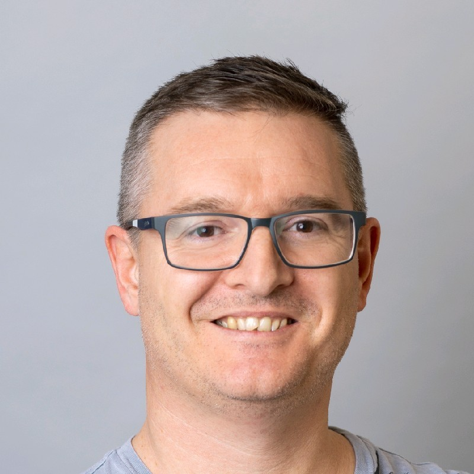

"Nihal is a highly capable individual, able to tackle complex and demanding challenges.
As a part of 60mm I worked on creating and testing scalable and accessible software designed using Flutter and given functionality through NodeJS and Firebase
ALLSKIER Solutions Pvt. Ltd. is an Edge Computing based Startup Company which designs and implements Edge computing systems for modern day needs.
As a part of ALLSKIER, I:
RUGVED is a Student Project recognized by MIT, Manipal which works in the field of AI robotics.
I worked on implementing the mapping stack of SLAM using ROS on autonomous bots and also made an OpenCV model for lane detection.
Took 16 online Piano classes between 20 July 2020- 18 Sept 2020 and 5 Jan 2021- 23 Feb 2021
I co-wrote the 'Language understanding in Azure Health Bot' module for the 'Create intelligent health bots with Azure Health Bot' Learning path on the Microsoft Learn website
Click to view the module on Microsoft LearnBuilt a content-based movie recommendation system and hosted it on Microsoft Azure as a web app using the Azure App Service. It suggests movies which are similar to what you've already watched and is built using Python and ML libraries like flask, numpy, pandas, sklearn and ast.
Click to view the project on GitHubI built an app using Flutter that shows various Pokemon from Gen 1-6 with description, moves and other parameters. flutter_tts library is also used for converting Pokemon description into speech and playing it whenever the user checks the description.
Click to view the project on GitHubUsing Ensemble Learning with the XGBoost Classifier, I differentiated healthy people from those with Parkinson's disease based on a range of biomedical voice measurements.
Click to view the project on GitHubAgriculture is the primary source of livelihood for a large section of the society in India, and the ever-increasing demand for high quality and high quantity yield calls for highly efficient and effective farming methods. Grow-IoT is a smart analytics app for comprehensive plant health analysis and remote farm monitoring platform to ensure that the farmer is aware of all the critical factors affecting the farm status. The cameras installed on the field facilitate capturing images of the plants to determine plant health based on phenotypic characteristics. Visual feedback is provided by the computer vision algorithm using image segmentation to classify plant health into three distinct categories. The sensors installed on the field relay crucial information to the Cloud for real-time optimized farm status management. All the data relayed can then be viewed using the user-friendly Grow-IoT app to remotely monitor integral aspects of the farm and take the required actions in case of critical conditions. Thus, the mobile platform combined with computer vision for plant health analysis and smart sensor modules gives the farmer a technical perspective. The simplistic design of the application makes sure that the user has the least cognitive load while using it. Overall, the smart module is a significant technical step to facilitate efficient produce across all seasons in a year.
Click to view the Research PaperMicrosoft Learn Student Ambassadors are a global group of campus leaders who are eager to help fellow students, create robust tech communities and develop technical and career skills for the future.
As a Microsoft Learn Student Ambassador, I:
Google Developer Student Clubs (GDSC) are community groups for college and university students interested in Google developer technologies.
Co-conducted a workshop explaining Cloud Computing and VM Creation in GCP as part of the 30 days of GCP program during October, 2020 and also established a partnership with Univ Ai to conduct a talk by Geoffrey Hinton on "Part-whole hierarchies in neural networks" as well as a series of AI hackathons.
Revels is Manipal Institute of Technology's annual national-level Sports and Cultural festival.
Generated a sevenfold increase in the participation to events of the Animania category through a dedicated and target-based marketing strategy.
Helped participants with technical difficulties/doubts regarding OpenCV, Object Detection and Linux
I did a learn live session on the 'Language understanding in Azure Health Bot' module that I co-authored where I talked about Language Understanding (LUIS) and how to integrate it into the Azure Health Bot.
Watch on YouTube
I did a tutorial video on Cloud Computing concepts as part of the ALLSKIER Team. After the video release, registered participants were sent instructions on how to create a VM on Azure and also had access to a live doubt clearing session with me.
Watch on YouTube
Ikasi was a two day event hosted by the Microsoft Learn Student Ambassadors of Manipal, India. The event was preceeded by a series of well crafted sessions to enrich the participants' knowledge. The event offered the participants a chance to win amazing swags and internships.
As a part of the Manipal MLSA Community, I worked on getting sponsorships for the event in terms of swags and internship opportunities.
Watch on YouTube
Co-conducted a professional webinar as part of the ALLSKIER Team on getting started with Flutter
Watch on YouTube
Co-conducted an internal workshop for the participants of the 30 Days of GCP Program explaining basic concepts of Cloud Computing and VM Creation on GCP
Co-conducted a workshop explaining Cloud Computing and VM Creation on Azure
Co-conducted a workshop explaining Cloud Computing and the deployment of an ML Web App on Azure